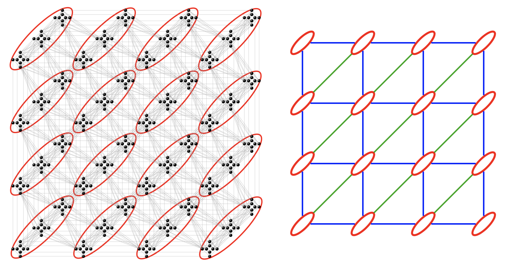
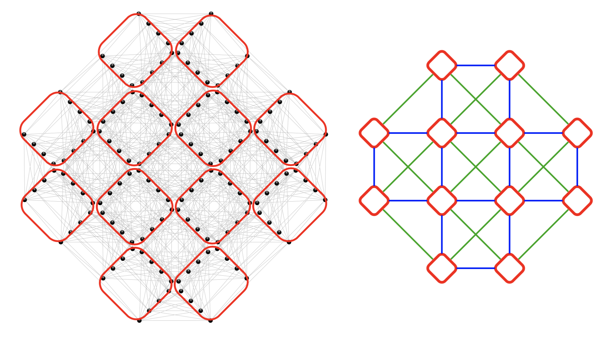

Lattice geometries
The Ising graph allowed for loading instances directly from a file and translating them into a graph. The next step towards constructing the tensor network is to build a lattice, based on which we will transform the Ising graph into a clustered Hamiltonian. Within the SpinGlassNetworks.jl package, users have the flexibility to construct three types of lattice geometries, each tailored to specific needs.
Super square lattice
The super_square_lattice geometry represents a square lattice with nearest neighbors interactions (horizontal and vertical interactions between unit cells) and next nearest neighbor interactions (diagonal interactions). Unit cells depicted on the schematic picture below as red ellipses can consist of multiple spins. This geometry allows for an exploration of spin interactions beyond the traditional square lattice framework.

In SpinGlassPEPS.jl solver, a grid of this type can be loaded using the command super_square_lattice.
SpinGlassNetworks.super_square_lattice — Functionsuper_square_lattice(
size::NTuple{5, Int64}
) -> Dict{Int64, Tuple{Int64, Int64}}
Create a mapping from Ising graph coordinates to a super square lattice arrangement. Variable number of Ising graph -> cluster hamiltonian coordinate system
This function generates a mapping that relates Ising graph coordinates to a super square lattice arrangement. The super square lattice is defined by the size of five dimensions: (m, um, n, un, t), where m is the number of columns, n is the number of rows and t denotes the number of spins stored in the cluster.
Arguments:
size::NTuple{5, Int}: A tuple specifying the size of the super square lattice in five dimensions:(m, um, n, un, t).
Returns:
coord_map::Dict: A dictionary that maps Ising graph coordinates to the corresponding lattice coordinates.
The size tuple represents the dimensions of the super square lattice. The function creates a dictionary where ising graph coordinates are associated with their corresponding lattice coordinates.
super_square_lattice(
size::Tuple{Int64, Int64, Int64}
) -> Dict{Int64, Tuple{Int64, Int64}}
Create a mapping from Ising graph coordinates to a simplified super square lattice arrangement.
This function generates a mapping that relates Ising graph coordinates to a simplified super square lattice arrangement. The simplified super square lattice is defined by the size of three dimensions: (m, n, t), where m is the number of columns, n is the number of rows and t denotes the number of spins stored in the cluster.
Arguments:
size::NTuple{3, Int}: A tuple specifying the size of the simplified super square lattice in three dimensions:(m, n, t), wheremis number of columns,nnumber of rows andtdenotes numberr of spins in cluster.
Returns:
coord_map::Dict: A dictionary that maps Ising graph coordinates to the corresponding lattice coordinates.
The size tuple represents the dimensions of the simplified super square lattice. The function internally adds the required dimensions (1, 1) to make it compatible with the super_square_lattice function, which deals with five dimensions.
Below you find simple example of usage super_square_latttice function.
using SpinGlassEngine, SpinGlassNetworks, LabelledGraphs
instance = "$(@__DIR__)/../../src/instances/square_diagonal/5x5/diagonal.txt"
ig = ising_graph(instance)
m = 5
n = 5
t = 4
cl_h = clustered_hamiltonian(
ig,
cluster_assignment_rule = super_square_lattice((m, n, t))
)
println("Number of nodes in oryginal instance: ", length(LabelledGraphs.vertices(ig)), "\n", " Number of nodes in clustered Hamiltonian: ", length(LabelledGraphs.vertices(cl_h)))Number of nodes in oryginal instance: 100
Number of nodes in clustered Hamiltonian: 25Pegasus graphs
The Pegasus graph is a type of graph architecture used in quantum computing systems, particularly in the quantum annealing machines developed by D-Wave Systems. It is designed to provide a grid of qubits with specific connectivity patterns optimized for solving certain optimization problems. Futer details can be found here.
In SpinGlassPEPS.jl solver, a grid of this type can be loaded using the command pegasus_lattice.
SpinGlassNetworks.pegasus_lattice — Functionpegasus_lattice(
size::Tuple{Int64, Int64, Int64}
) -> Dict{Int64, Tuple{Int64, Int64, Int64}}
Create a mapping from Ising graph coordinates to Pegasus lattice coordinates.
This function generates a mapping that relates Ising graph coordinates to Pegasus lattice coordinates based on the specified size of the Pegasus lattice in three dimensions: (m, n, t).
Arguments:
size::NTuple{3, Int}: A tuple specifying the size of the Pegasus lattice in three dimensions:(m, n, t), wheremis number of columns,nnumber of rows andtdenotes number of spins in cluster. Convention:tis already divided by 8, sot=3 for Pegasus lattice.
Returns:
coord_map::Dict: A dictionary that maps Ising graph coordinates to the corresponding Pegasus lattice coordinates.
The pegasus_lattice allows you to build the graph relevant for D-Wave Pegasus architecture.
Below you find simple example of usage pegasus_latttice function.
using SpinGlassEngine, SpinGlassNetworks, LabelledGraphs
# load Chimera instance and create Ising graph
instance = "$(@__DIR__)/../../src/instances/pegasus_random/P4/RAU/001_sg.txt"
ig = ising_graph(instance)
# Loaded instance is pegasus graph
m = 3
n = 3
t = 3
cl_h = clustered_hamiltonian(
ig,
cluster_assignment_rule = pegasus_lattice((m, n, t))
)
println("Number of nodes in original instance: ", length(LabelledGraphs.vertices(ig)), "\n", " Number of nodes in clustered Hamiltonian: ", length(LabelledGraphs.vertices(cl_h))/2)Number of nodes in original instance: 216
Number of nodes in clustered Hamiltonian: 9.0Zephyr graphs
The Zephyr graph is a type of graph architecture used in quantum computing systems, particularly in the quantum annealing machines developed by D-Wave Systems. Futer details can be found here.
In SpinGlassPEPS.jl solver, a grid of this type can be loaded using the command zephyr_lattice.
SpinGlassNetworks.zephyr_lattice — Functionzephyr_lattice(
size::Tuple{Int64, Int64, Int64}
) -> Dict{Int64, Tuple{Int64, Int64, Int64}}
Create a mapping from Ising graph coordinates to Zephyr lattice coordinates.
This function generates a mapping that relates Ising graph coordinates to Zephyr lattice coordinates based on the specified size of the Zephyr lattice in three dimensions: (m, n, t).
Arguments:
size::NTuple{3, Int}: A tuple specifying the size of the Zephyr lattice in three dimensions:(m, n, t), wheremis double number of columns,ndouble number of rows andtdenotes number of spins in cluster. Convention:tis already divided by 4, sot=4 for Zephyr lattice. E.g. to create 3x3x16 Zephyr lattice, you should usem=6,n=6,t=4.
Returns:
coord_map::Dict: A dictionary that maps Ising graph coordinates to the corresponding Zephyr lattice coordinates.
The zephyr_lattice allows you to build the graph relevant for D-Wave Zephyr architecture.
Below you find simple example of usage zephyr_latttice function.
using SpinGlassEngine, SpinGlassNetworks, LabelledGraphs
# load Chimera instance and create Ising graph
instance = "$(@__DIR__)/../../src/instances/zephyr_random/Z3/RAU/001_sg.txt"
ig = ising_graph(instance)
# Loaded instance is zephyr graph
m = 6
n = 6
t = 4
cl_h = clustered_hamiltonian(
ig,
cluster_assignment_rule = zephyr_lattice((m, n, t))
)
println("Number of nodes in oryginal instance: ", length(LabelledGraphs.vertices(ig)))Number of nodes in oryginal instance: 332